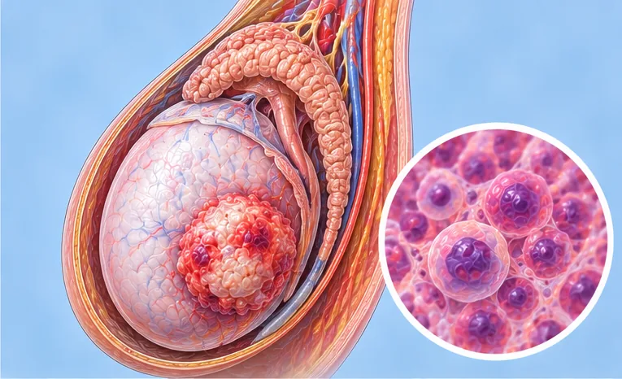
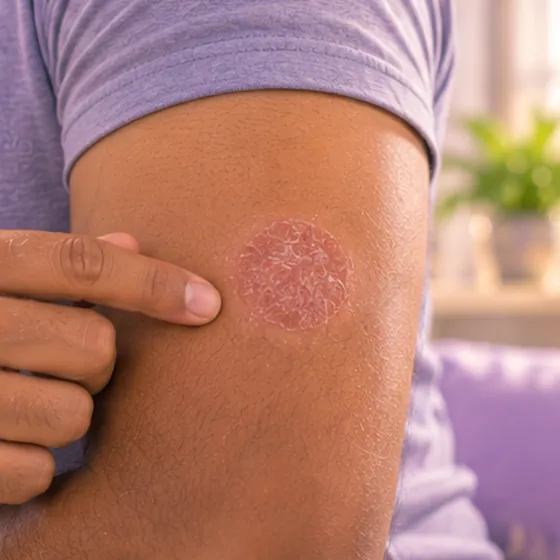

阴茎癌
一种较少见的癌症，通常起源于阴茎头或包皮的皮肤
这是什么
阴茎皮肤里的细胞不受控制地生长。它常从久久不退的溃疡、斑块或肿块开始，所以任何持续的变化都应该检查。
- 阴茎头或包皮
- 多见于年长男性
- 久久不退的溃疡或肿块
- 就诊科室
- 先看家庭医生，再看泌尿科医生
- 多发人群
- 男性，多为年长者；HPV感染、吸烟和包皮过紧会增加风险
- 传染性
- 不传染。但常见的风险因素HPV可通过性接触传播
- 病程
- 起初常常生长缓慢；由专科团队为每个人制订照护方案
常见表现

红色脱屑斑块红斑性斑块
其他症状
- 阴茎头或包皮上出现溃疡、肿块或增生物
- 出血，或包皮下有带异味的分泌物
- 阴茎头肿胀，或包皮难以翻开
- 腹股沟出现肿大的淋巴结
为什么会这样

病因尚未完全明确特发性 
吸烟吸烟（烟草使用） 
年龄增长衰老
其他原因
- HPV（一种通过性接触传播的病毒）的长期感染
- 包皮过紧，或没有保持包皮下方清洁
出现这些情况请先看医生
- 出血不止，或完全无法排尿：立即去医院
- 阴茎上的溃疡、肿块或斑块几周后仍未消退
- 包皮下出血或有带异味的分泌物
- 腹股沟出现硬块或肿胀
- 疼痛、红肿并伴有发烧：今天就去看医生
如果有以上情况，请先看医生，再来做调理。
本页只是一般性的健康资讯。请继续按时服用平常的药物，并继续看医生。
请继续日常治疗
请继续按医嘱服药，并按时复诊。我们的调理是温和的辅助，不能代替医疗。
日常护理

轻柔清洗，轻轻拍干温和清洁 
戒烟戒烟 
按建议接种疫苗疫苗接种
更多自我照顾的方法
- 阴茎上有任何持续的变化都要看医生；不要因为害羞而拖延
- 接受癌症照护时，遵照团队的安排，不要自行停止治疗，并询问疼痛和情绪支持方面的帮助
告诉理疗师
- 癌症或正在治疗癌症
- 皮肤破损、发红或疼痛
- 糖尿病或皮肤感觉减退
- 服用抗凝药
- 心脏起搏器或金属植入物
调理师会在开始前和你确认这一项。
相关疾病
参考资料: General information based on public health sources such as Mayo Clinic, NHS, Cleveland Clinic and NCBI StatPearls.
页面更新: 2026-10-31